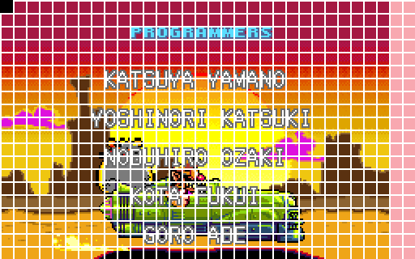
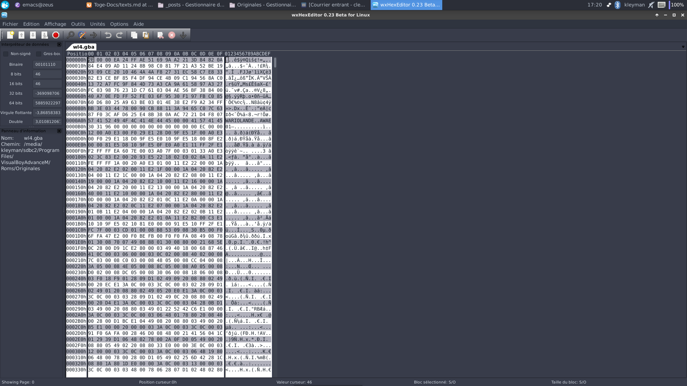
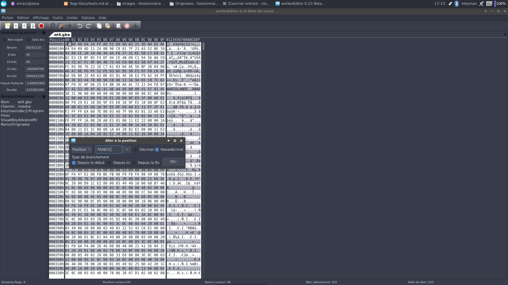
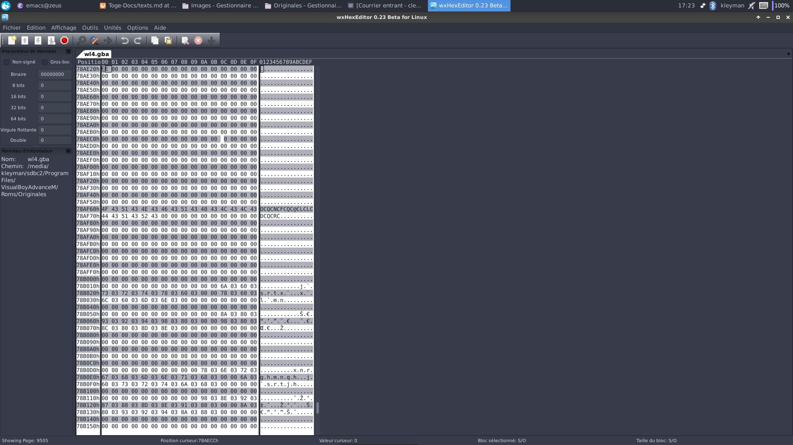
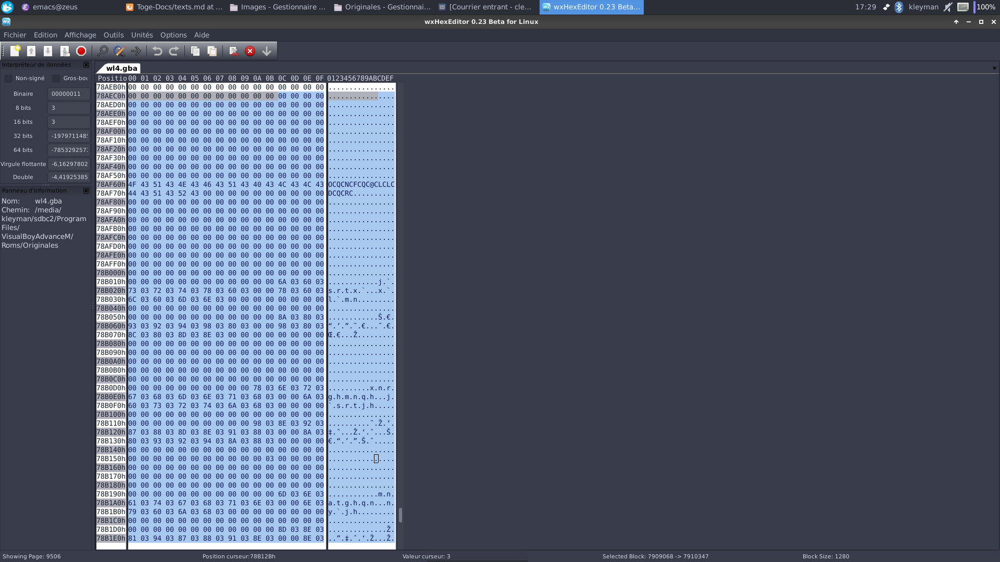
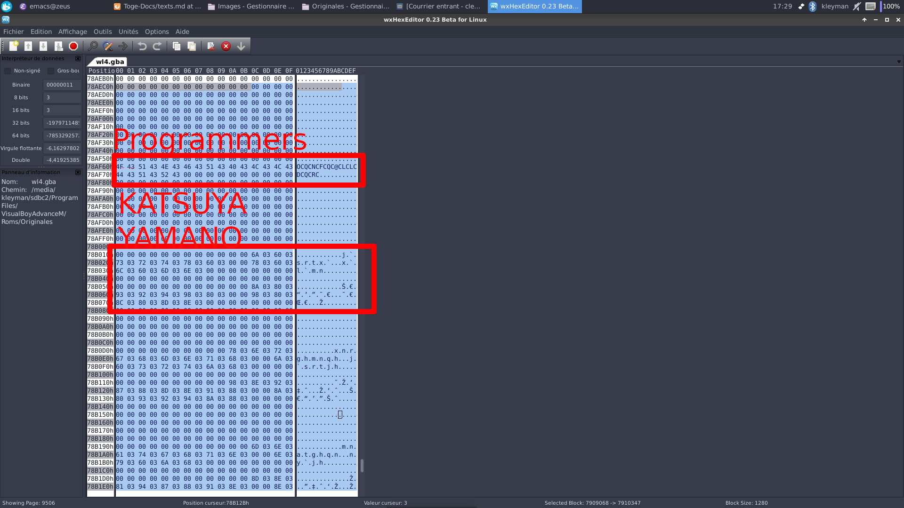
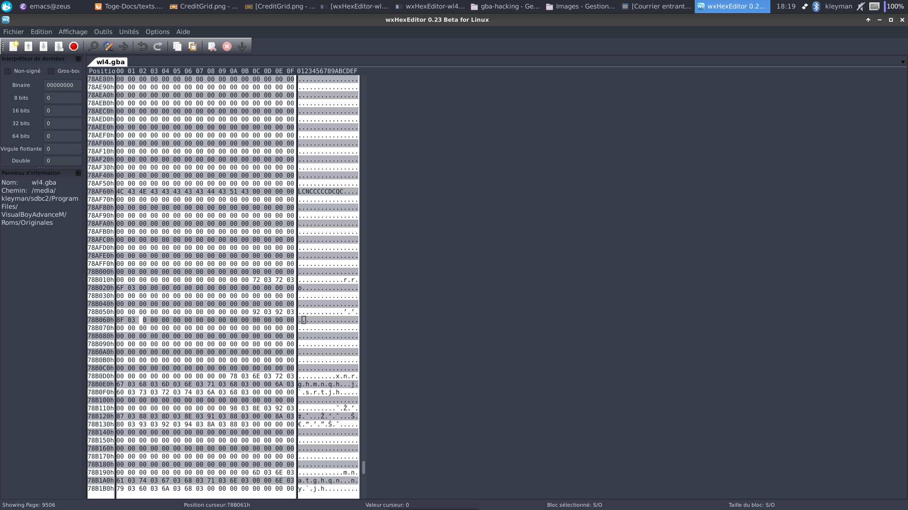

Edit credits in Wario Land 4
A very short tutorial to show you how to edit the credits using a hexadecimal editor (because I want WarioSpore to use a hexadecimal editor at least a little bit). To be honest the work is already done by HelloTibi aka xTibor. Our goal will be to credit ssp as modder.
Tool needed
- A hexadecimal editor
- An emulator + ROM
- Steaks docs
Let’s begin
When we read the docs, we understood that the data is stored in a different way than other text. It uses tiles for the rendering. An image is better than a lot of text

The pink part can’t be seen in the game. There are 640 tiles. Each tile is stored in 2 bits.
The text in the image can be seen at offset 0x0878AECC according to the doc.
What does that mean?
It means that if we go to the 78AECC bit in the ROM ((in base 16) (or the 7909068th bit in decimal) (You can use a calculator program with a hexadecimal mode)) we’ll find the stored text.
Let’s open the ROM with a hex editor (I’ll use wxHexEditor but any other should do the trick).

Use CTRL-G to go to the specified specified offset (78AECC)



We have now selected the interessting section.
Thanks to the docs we can easily decipher this: 4F 43 51 43 4E 43 46 43 These 8 bits can be seen as “Prog” for programmer. The 43 between each character means we use the first style of writing (One Tile Writing).
If we go further we can see: 6A 03 60 03 And then in the second block: 8A 03 80 03. In the two case it’s the letters “KA” but written in 03 (Two Tiles Writing).

Let’s end it
Now we have understood how it works, we will use the docs to credit ssp as modder.
If we translate MODDER -> 4C 4E 43 43 44 51 (with the 43) Same for SSP (top) -> 72 72 6F (bottom) -> 92 92 8F (with the 03)
